羅漢寺/大分県本耶馬渓町
大分県有数の観光地、羅漢寺である。
ここは耶馬渓観光のハイライトというだけでなく、3777体という大量の石仏が安置される全国羅漢の総本山なのだ。
この寺は山の中腹にあるのでリフトを使って登っていく。
歩いて登る山道もあるがもちろん誰も見向きもしない。
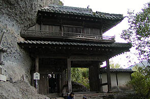
で、リフト駅から歩くと山門が見えてくる。すでに岩壁にめり込んでます。
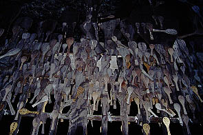 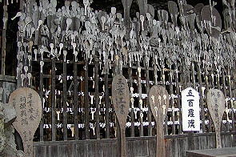
山門を過ぎると五百羅漢がある無漏窟。
間口の広い洞窟内に五百羅漢がいるのだが、特筆すべきは大量に打ち付けられたしゃもじである。普通のサイズから特大のものまで数多くのしゃもじがひしめいている。これは願い事をしゃもじに書いてすくって（救って）もらおう、という意味。
それにしてもこれだけのしゃもじをいっぺんに見たのは初めてだ。一寸恐ろしくもある。
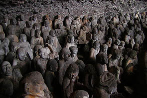
無漏窟内の五百羅漢。技法のせいか五百羅漢独特のハッピー感が少ないような気がする。陰鬱な表情の羅漢さん達。
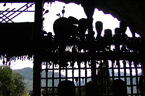
中から見たしゃもじ。羅漢さん達も日を追うごとに増えていくしゃもじを見て陰鬱になってしまったのかも。
福岡県の○輔！しゃもじに「××子とヤレますように」とか書くな！羅漢さんが困ってるぞ！
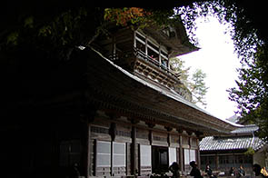 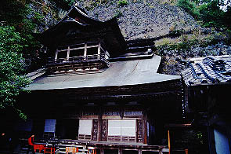
で、本堂である。ここも後ろの岩盤にめり込んだような造りである。2階の見晴台のようなところに人がいる。
行ってみますか。
・・・と思ったが本堂の中から行ける様子はない。見ると本堂左手の岩との隙間に変な入口があるではないか。
どうやらそこから見晴し台に行けるらしい。ここから先は有料になっていて庭園入園料としてある。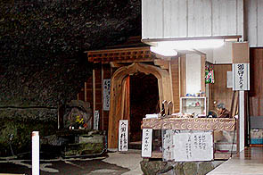
？？？？
とにかく入ってみよう。考えるな、感じろ（byブルースリー）である。
中に入ると左側が岩盤右側が壁、という半分洞窟のような通路がしばらく続く。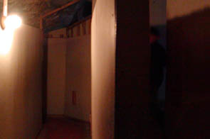
最初の角を曲がると木製スロープのような階段のような物凄〜く中途半端な通路になる。さらにくねくねと折れ曲がり迷路のようになって来て、そして壁もコンパネを立ててあるだけの文化祭のお化け屋敷レベルの安い造りになってくる。ついでにどんどん進む程、暗くなってくる。
外観の立派さと裏腹な造りに「お化けでも出てくるのか〜」と思いつつ進んでいくと、アラ不思議。
いつのまにかそこは2階の見晴し台でした〜。
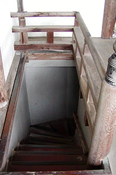
暗くて迷路のような通路とスロープによる見事なだまし通路である。
しかも最初に入ったところが洞窟風なのでいつの間にか地下を歩いているような気分になってくるので多少スロープで上がってもまさか2階までは来てないだろう、と思わせるニクイ演出。すべてが計算済みの恐らく確信犯的な設計だろう。
この本堂が造られたのが、昭和44年。その前の本堂は昭和18年に焼失してしまったそうだ。
しかし前本堂も同じような貌だったのでもしかしたらこの会員制秘密通路は前からあったものなのかも知れない。
岩屋にお堂を造る事自体大変な事なのに、それを逆手に利用してこんなトリッキーなものを造るとは。コレは物凄く面白い！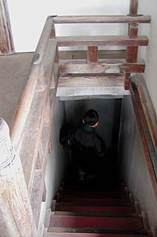
見晴し台でしばし秋の山風景を楽しみ、今度は上がって来た階段とは別の下り階段を降りていく。
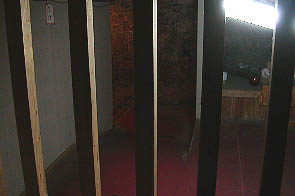
階段を下りると先ほどの行き通路が格子の向こうに見えている。この辺はわざと、というか演出のひとつなのであろう。
これだけの渋いからくり通路を造ったのだから、コンパネ壁だけは何とかして下さい。
で、建物の外へは唐突に空中に掛かる太鼓橋を渡って出る。その先に燃えるような紅葉が美しい庭園があるのだ。
つまり庭園に行くにはこの不思議な通路と見晴し台を経由しないと行けないのだ。上手い！上手すぎるぞ！
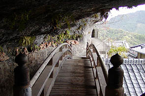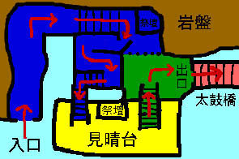
記憶を元に絵を書いてみました（超適当）。大体こんな感じだッたと思います。多分。
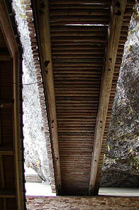
庭園の紅葉の美しさは本稿で取りあげる類いのモノではないので写真はないが綺麗でした。
太鼓橋の裏側。
2002.11.
珍寺大道場 HOME